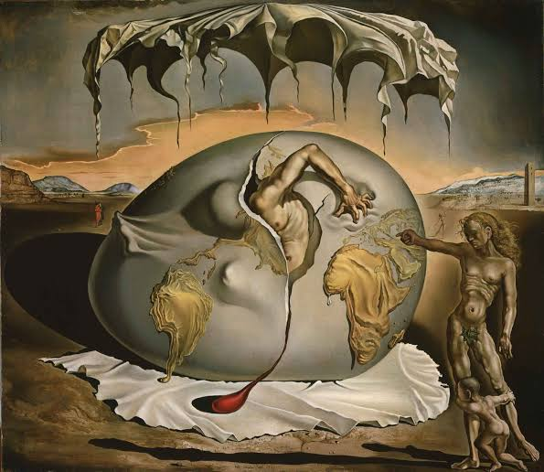

Poems
Eggs Between Stanzas

My professor said place a chicken egg between the stanzas. If the room crushed it, cracked it, or let it roll, the poem needed work. egg In Italian the stanza is a room, a stopping place where breath settles like calcium carbonate hardening into nearly all the shell. egg We enter one to change the topic, another to shift the mood, a third for the pause the body keeps between heartbeats. Some poems refuse rooms, spill continuous as the yolk one single cell, nature’s largest unbroken thought. egg Seventeen thousand pores let the shell breathe while the hen turns a day and a night into an egg. Breed decides the color: commercial brown or white, or the rarer blue, green, pink arriving like a secret the Greeks knew when they first set lines with white space between them. egg Poets choose the number of lines the way a chick chooses the moment to crack from inside with its sharp point. Little force is needed to pip the arch that holds a hundred pounds of even pressure tiny function one with tiny form. egg Couplets, tercets, quatrains, rooms of two, three, four, or the seven-line septet, sometimes rhyme royal in its measured pentameter. egg The largest recorded chicken egg weighed sixteen ounces, double-yolked, double-shelled, laid by a White Leghorn in Vinland, New Jersey, February 25, 1956 a room inside a room too heavy for ordinary flight. egg Only fresh eggs sink to the bottom of a bowl of water. The older, gassy ones float, their rooms already leaking what was meant to stay. This poem used only the ones that still held their silence and their weight.
J. Alan Nelson is a poet, journalist, lawyer, actor, and nominee for a Pushcart Prize, Best of Net and Best Microfiction.